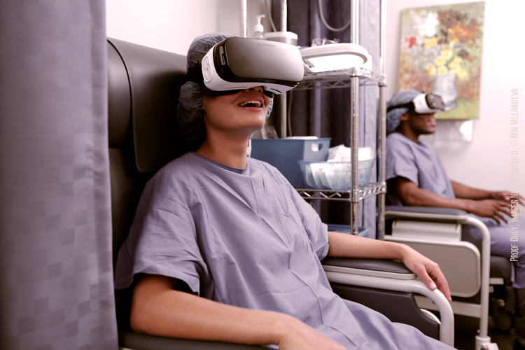

It’s difficult to avoid the harsh and stress-inducing realities of medical procedures, and the pain and discomfort often associated with them. Alleviation of this pain is often at the forefront of a patient’s consciousness. As a result, the first solution that usually comes to mind is the use of painkillers. However, current research suggests that there may be an alternative.
In recent years, virtual reality (VR) has made an extraordinary shift from a costly technology for video game enthusiasts to a valuable tool within the healthcare sector—more specifically, in the area of pain management. For individuals undergoing painful medical procedures and treatments, powerful painkillers may seem like the most obvious, if not the only option for patients and physicians alike. Unfortunately, this form of traditional pain management presents a multitude of risk factors, such as high rates of addiction, debilitating withdrawal symptoms, overdose, and even death.
 Virtual reality (VR) relieves pain by distracting its user (Source: AppliedVR)
VR allows its users to become fully immersed in a 3D, computer-simulated environment, normally presented through a head-mounted display (HMD) that encapsulates the entire visual field [1]. This is different from augmented reality, which superimposes artificial graphics onto a person’s view of the actual world. With the intention to stimulate as many of our senses as possible, the experience provided by VR is often complemented by surrounding audio and hand accessories to maximize sensory feedback [2]. Simply put, VR convinces its users that they are somewhere else—free from the boundaries characteristic of stationary TV or computer screens. It provides a unique opportunity for each user to manipulate and explore a new environment and forget about their physical surroundings.
Clinical studies have shown that VR has promising applications in both acute and chronic pain management. The human brain is quite inadequate in processing more than one source of sensory input simultaneously. An individual must therefore attend to the source of pain in order to perceive a stimulus as painful. In diverting a patient’s attention away from the stimulus causing pain or discomfort, their perception of pain is decreased [3]. This is typically accomplished by VR through interactive means, such as games and multimodal sensory stimulation [2]. If the objective is to simply reduce a patient’s anxiety, a relaxing environment and pleasant scenery will likely appear [2]. Due to endless design possibilities, existing simulations can be modified, or new ones can be created, to cater to the needs of different
Attenuation of the perception of pain is effective in patients suffering from acute forms of pain, such as those associated with severe burn wounds, labour during pregnancy, and chemotherapy [2]. VR has also been particularly beneficial in reducing fear and anxiety associated with routine medical procedures, such as intravenous placements and blood draws, most notably in cases involving children [2],[4]. Although research pertaining to the utility of VR in chronic pain management is only in its preliminary stages, results from pilot studies and subsequent case studies are auspicious [5]. Virtual reality hypnotherapy (VRH) delivers an analgesic effect through hypnosis, where audio (of ordered numbers) helps induce the user into a deep state of relaxation and pain-relief [6]. VRH is more immersive than traditional hypnotherapy and is therefore better able to facilitate a reduction in pain perception [2],[6],[7].
Since the beginning of the opioid epidemic approximately 20 years ago, addiction to pain-relieving medications has claimed the lives of patients experiencing acute and chronic pain in unprecedented numbers [8]. Commonly prescribed opioids contributing to the problem include oxycodone, hydrocodone, codeine, buprenorphine, and morphine. Heroin, an illegal opioid that is similar to morphine, is also a large contributor. Although this issue may have arisen largely due to high rates of opioid prescription following successful marketing campaigns, the medications themselves are highly addictive [8]. Over time, the development of physiological dependence can occur and is characterized by potentially severe withdrawal symptoms. Side-effects are common when using opioid therapies and include nausea, vomiting, constipation, dizziness, and sedation [9]. For example, the sedative effects of morphine can inhibit a patient’s ability to move around and reduce a patient’s appetite, which can lead to a longer recovery period following invasive medical procedures [10]. As a nonpharmacological tool for pain management, VR can be used to complement opioids, or to replace their use altogether [2].
Continual advances in neuroscience have brought to light the many advantages of VR as a method for pain reduction. Today, its applications are largely used in hospitals and clinics to manage acute pain. In the future, however, VR is likely to play an important role in chronic pain management, and in supplementing rehabilitation and physical therapy. Although the use of VR in the medical setting is relatively new, its potential to alleviate various types of pain without the adverse effects of traditional pain medications is a step-forward in ultimately improving patient outcomes.